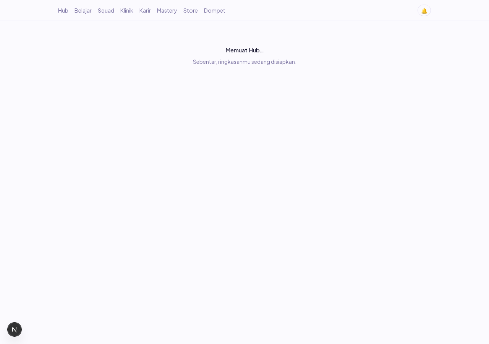
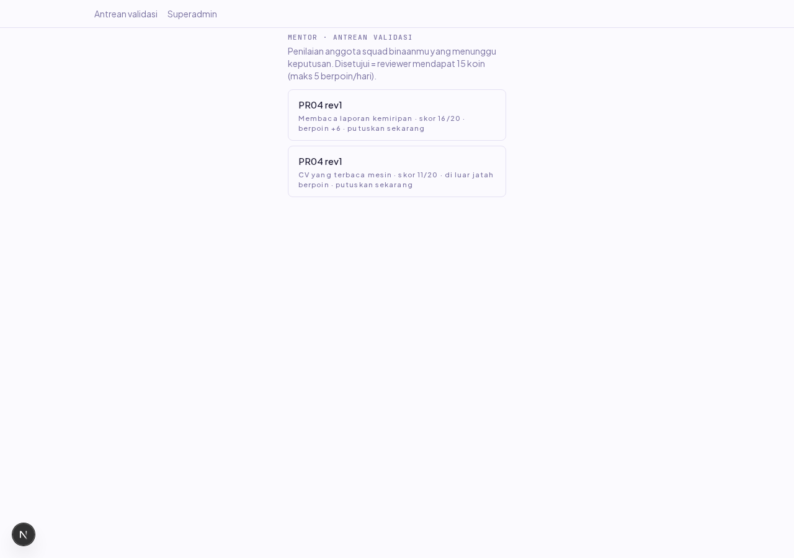
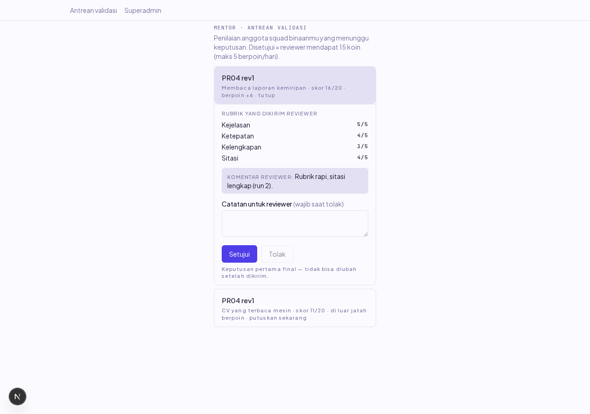
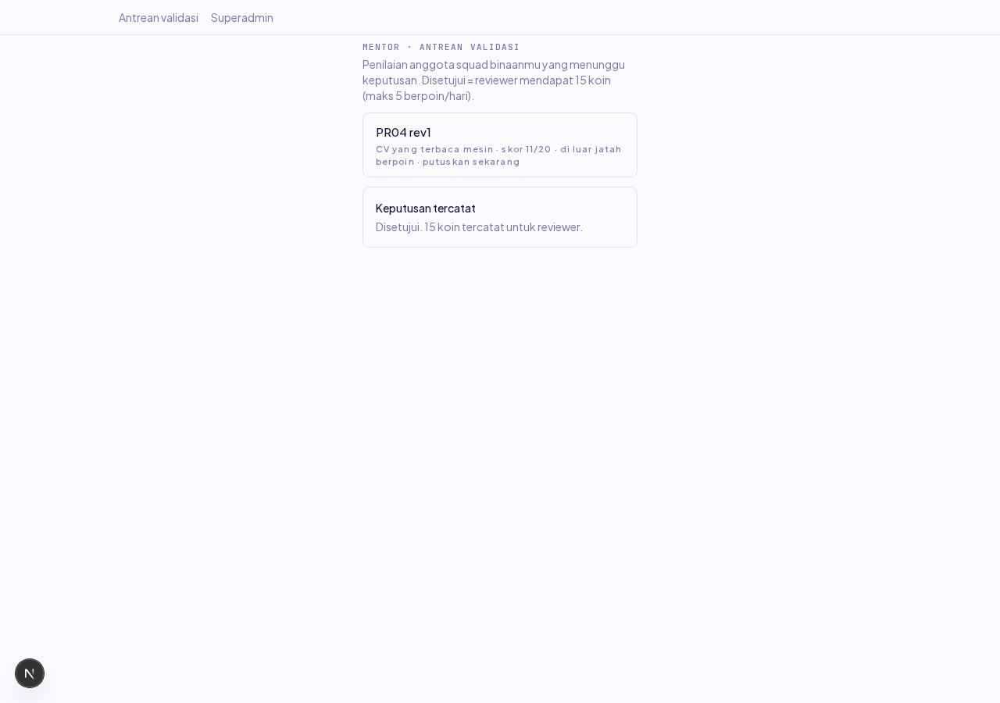
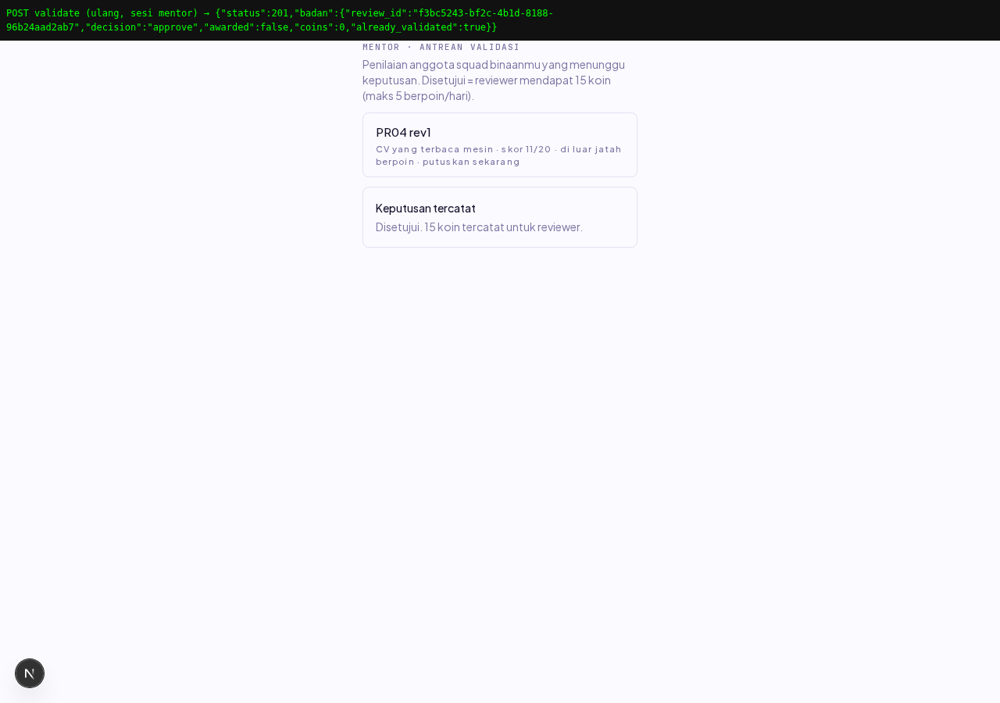
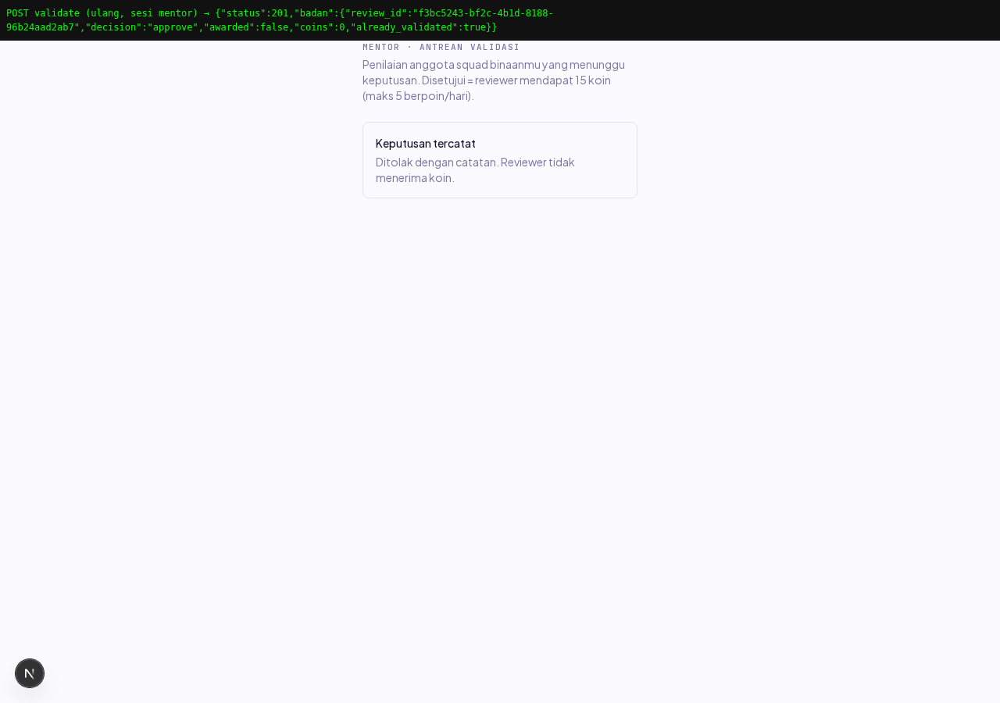
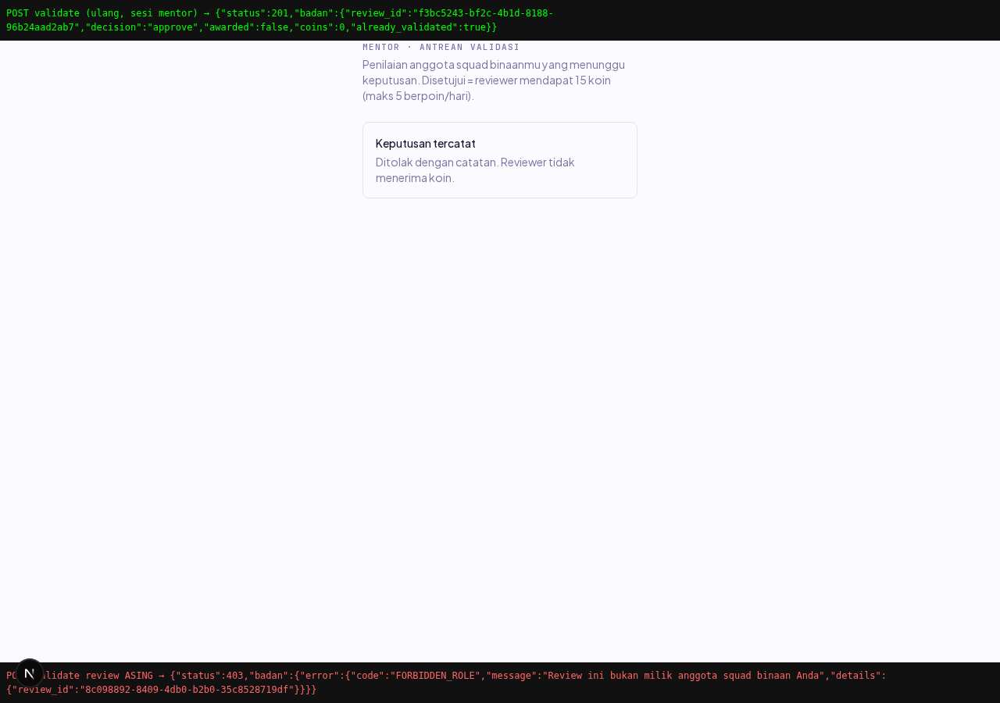
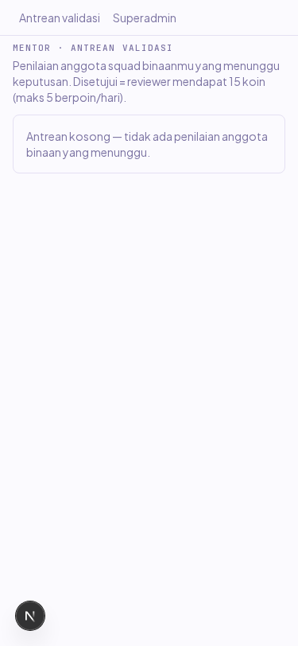

PR-04 — Konsol mentor: antrean validasi review
Laporan verifikasi item PR-04 (Dev B, W7, PRD §7 E11). Layar /mentor tempat mentor menyetujui atau menolak penilaian peer anggota squad binaannya: approve menyalakan 15 koin untuk reviewer (selama review itu berpoin), reject wajib catatan, keputusan pertama final. Dikerjakan 25 Okt 2026.
1 · Ringkasan
Sebelum: penilaian peer sudah bisa dikirim pengguna lewat UI PR-03, tapi tidak ada satu pun layar untuk mentor menutupinya — review menumpuk tanpa keputusan, dan janji PRD bahwa review berpoin layak dapat 15 koin setelah divalidasi mentor tidak pernah bisa terpenuhi dari produk. Sesudah: mentor yang login masuk ke /mentor, melihat antrean review yang dibuat anggota squad binaannya (nama reviewer, judul lesson, skor rubrik total, badge berpoin atau di luar jatah), membuka satu kartu untuk membaca rubrik yang dikirim reviewer beserta komentarnya, lalu memutuskan: Setujui (catatan opsional) atau Tolak (catatan wajib).
Dua acceptance criteria item terbukti: (1) mentor hanya melihat review dari squad binaannya — kepemilikan dijawab di service dengan query join ke squads.mentor_id (guard hanya menjawab peran; superadmin lolos middleware tapi antreannya kosong karena ia bukan mentor_id squad mana pun); (2) menyetujui review memicu entri koin untuk reviewer tepat sekali — koin ditulis lewat CoinLedgerService (aturan keras 3), tepat sekali dijaga tiga lapis: cek mentor_checked setelah FOR UPDATE, index unik coin_ledger_ref_uniq migrasi 010, dan findExisting di service koin; keputusan kedua dijawab already_validated tanpa melempar dan tanpa baris ledger baru.
Keputusan desain: skor yang tampil adalah skor yang dikirim reviewer (mentor memvalidasi, tidak menilai ulang); identitas penulis attempt tidak ada karena memang tidak pernah dikirim server (PR-2, anti-kolusi); tidak ada draf lokal karena keputusan bersifat final di server — menyimpan draf hanya menggoda menunda; review dengan weighted_points = 0 (penulis cap 5 berpoin/hari PR-4 reviewer) tetap bisa divalidasi tapi tanpa koin, sesuai janji PRD bahwa mentor menutup review tanpa mencetak koin ke-6.
2 · Batasan yang jujur
Tiga keadaan uji yang perlu diketahui pembaca: (1) Data uji disemai lewat psql — antrean butuh review dari anggota squad binaan yang mentornya akun uji, dan membuatnya lewat UI berarti menyelesaikan lesson sungguhan sebagai dua pengguna; bentuk barisnya persis keluaran POST /attempts dan POST /reviews. (2) Verifikasi browser dijalankan dua kali: data run pertama tetap tercatat karena coin_ledger append-only (trigger menolak DELETE, aturan keras 1) dan satu reviewer hanya boleh satu review per attempt (index unik), jadi run kedua memakai attempt dan review baru — dua baris earn_review berbeda ref_id untuk reviewer yang sama justru jadi bukti ledger terus bertambah tanpa bisa diretas balik. (3) Uji idempotensi dan review asing dieksekusi lewat fetch dari dalam sesi mentor di browser (bukan lewat UI), karena UI dengan benar menyembunyikan kartu yang sudah divalidasi — respons JSON lengkap ditampilkan sebagai overlay di screenshot.
3 · Matriks skenario (24 cek)
| # | Skenario | Harapan | Hasil | Cara verifikasi |
|---|---|---|---|---|
| 1 | Login mentor | sesi terbentuk, mendarat di /hub | LULUS | Playwright + Screenshot 01 |
| 2 | Antrean binaan tampil | tepat 2 kartu menunggu | LULUS (jumlah=2) | Playwright + Screenshot 02 |
| 3 | Nama reviewer tampil | "PR04 rev1" pada kedua kartu | LULUS | Playwright |
| 4 | Judul lesson tampil | 2 judul lesson attempt berbeda | LULUS | Playwright |
| 5 | Badge berpoin | "berpoin +6" pada kartu pertama | LULUS | Playwright |
| 6 | Badge di luar jatah | "di luar jatah berpoin" pada kartu capped | LULUS | Playwright |
| 7 | Skor total | 16/20 dan 11/20 | LULUS | Playwright |
| 8 | PR-2 anonimitas | nama & id PENULIS tidak tampil di mana pun | LULUS | Playwright (teks antrean) |
| 9 | Rubrik reviewer readonly | kejelasan 5/5 · sitasi 4/5 | LULUS | Playwright + Screenshot 03 |
| 10 | Komentar reviewer tampil | teks komentar run 2 terbaca | LULUS | Playwright |
| 11 | Tolak terkunci tanpa catatan | tombol Tolak disabled | LULUS | Playwright |
| 12 | Setujui aktif | tombol Setujui bisa diklik | LULUS | Playwright |
| 13 | Approve berpoin | pesan "Disetujui. 15 koin tercatat untuk reviewer." | LULUS | Playwright + Screenshot 04 |
| 14 | Kartu keluar antrean | kartu yang divalidasi lenyap dari daftar | LULUS | Playwright |
| 15 | Idempotensi (edge) | approve kedua: 200/201, already_validated=true, awarded=false | LULUS (201) | fetch sesi browser + Screenshot 05 |
| 16 | Tolak capped terkunci dulu | tombol Tolak disabled sebelum catatan | LULUS | Playwright |
| 17 | Tolak capped terbuka | tombol Tolak aktif setelah catatan diisi | LULUS | Playwright |
| 18 | Reject tanpa koin | pesan "Ditolak dengan catatan. Reviewer tidak menerima koin." | LULUS | Playwright + Screenshot 06 |
| 19 | Antrean habis | 0 kartu tersisa setelah dua keputusan | LULUS (0) | Playwright + Screenshot 07 |
| 20 | Review asing (negative) | 403 FORBIDDEN_ROLE untuk review squad lain | LULUS | fetch sesi browser + Screenshot 08 |
| 21 | Console bersih | 0 error di luar jejak 403 yang dipicu skenario 20 sendiri | LULUS | Playwright console listener |
| 22 | Network bersih | 0 request 4xx/5xx tak terduga | LULUS | Playwright response listener |
| 23 | Login mobile | sesi jalan di viewport 375px | LULUS | Playwright |
| 24 | 375px tanpa scroll horizontal | scrollWidth ≤ 375 | LULUS (375) | Playwright + Screenshot 09 |
4 · Screenshot bukti

01 — Login mentor uji, mendarat di /hub.

02 — Antrean 2 kartu binaan: skor 16/20 berpoin +6 dan 11/20 di luar jatah berpoin. Identitas penulis tidak tampil. (Tombol bulat "N" kiri bawah adalah indikator dev Next.js, bukan bagian aplikasi.)

03 — Kartu terbuka: rubrik readonly yang dikirim reviewer (kejelasan 5/5, sitasi 4/5), komentar reviewer, kolom catatan, Tolak terkunci tanpa catatan.

04 — Approve dengan catatan: pesan hasil "Disetujui. 15 koin tercatat untuk reviewer."

05 — Approve kedua via fetch sesi mentor (overlay atas): status 201, already_validated: true, awarded: false — tidak ada koin ganda.

06 — Tolak review di luar jatah berpoin dengan catatan: reviewer tidak menerima koin.

07 — Setelah dua keputusan: 0 kartu tersisa, kartu hasil keputusan terakhir masih tampil.

08 — POST validate review squad lain via sesi mentor (overlay bawah): 403 FORBIDDEN_ROLE — kepemilikan dijaga service, bukan cuma guard peran.

09 — Viewport 375px: layout satu kolom, scrollWidth 375 (tanpa scroll horizontal).
5 · Katalog regresi
Yang ketemu selama verifikasi PR-04, dipetakan supaya tidak diulang. Tiga yang pertama adalah bug script verifikasi (bukan aplikasi), dua terakhir jebakan lingkungan yang mencatat waktu nyata:
| Pemicu | Gejala | Sebab | Perbaikan / perlakuan |
|---|---|---|---|
| Approve kedua lewat fetch | assert idempotensi FAIL padahal perilaku benar | respons sukses POST NestJS adalah 201, bukan 200; assert menuntut persis 200 | assert menerima 200/201 — respons sukses bukan kontrak satu angka |
| Cek "Antrean kosong" setelah keputusan | teks "Antrean kosong" tidak tampil, assert FAIL | cabang render antrean.length === 0 && !hasil: saat kartu hasil masih tampil, teks kosong memang tidak dirender (perilaku benar) | assert diganti ke hitungan kartu = 0 — uji keadaan yang benar-benar dirender, bukan teks yang kita bayangkan |
| Listener console selama skenario 403 | "console tanpa error" FAIL | browser mencatat resource 4xx sebagai console error otomatis — 403 itu berasal dari fetch FORBIDDEN_ROLE yang skenario uji picu sendiri | filter jejak 403 milik skenario; error lain tetap harus nol |
Web dev tanpa API_URL | /mentor redirect ke /login, antrean tak pernah render (timeout 120 dtk) | apps/web/middleware.ts membaca API_URL sisi server (default :3001), BUKAN NEXT_PUBLIC_API_URL — saat API jalan di port lain, middleware memanggil /me ke port salah | start web dengan API_URL eksplisit; dicatat sebagai jebakan fondasi di laporan auto-mode |
| Ingin rerun E2E dengan data sama | tidak bisa reset | coin_ledger append-only (trigger menolak DELETE) dan index unik satu review per reviewer per attempt | rerun memakai attempt + review baru; jejak run lama justru bukti append-only hidup (lihat seksi 6) |
6 · Bukti database
Query langsung ke strive_e2e setelah skenario selesai (dua run verifikasi digabung):
| Pertanyaan | Hasil | Artinya |
|---|---|---|
Baris earn_review reviewer PR04 rev1 | 2 baris @ +15 (ref_id 7b8cf602 run-1, f3bc5243 run-2) | ledger append-only terjaga: baris lama tidak bisa dihapus, run baru menambah baris baru |
users.coin_balance rev1 | 30 | sama dengan SUM(coin_ledger.amount) — aturan keras 2 (cache = kebenaran ledger) |
| Status 4 review rev1 | semua mentor_checked = t | keputusan mentor menutup review; keputusan pertama final |
audit_log aksi mentor | 4 entri mentor.review.validate (2 approve, 2 reject) | tiap keputusan tercatat dengan pelaku dan before/after |
7 · Cakupan varian & gerbang
| Gerbang | Cakupan | Hasil |
|---|---|---|
Unit (mentor.service.spec.ts) | pesan hasil, guard catatan, mapping galat | 8/8 lulus |
Integrasi DB nyata (mentor-validate.integration.spec.ts) | 14 test: kepemilikan antrean, anonimitas respons, koin tepat sekali (3 lapis), finalitas keputusan, capped tanpa koin, FORBIDDEN_ROLE, NOT_FOUND, reviewer keluar squad, self-validation | 14/14 lulus |
| Browser (Playwright) | 24 cek: golden path + negative + edge, desktop 1280px & mobile 375px | 24/24 lulus |
| Gerbang repo (lint · typecheck · test · build · audit-deps) | lima langkah, dijalankan setelah perubahan terakhir (termasuk penjaga audit L1), tanpa dev server hidup | hijau (EXIT=0) |
| Audit keamanan | seluruh file PR-04 (API + web) oleh agen audit terpisah, sebelum commit | 0 Kritis/Tinggi/Sedang; 1 Low DIPASANG di PR ini, 2 Info tanpa tindakan — detail di bawah |
8 · Audit keamanan (agen terpisah, sebelum commit)
Empat wilayah diperiksa penuh: celah kode aplikasi, rahasia bocor, dependency, konfigurasi. Hasil: 0 Kritis / 0 Tinggi / 0 Sedang, 1 Low (dipasang penjaganya di PR ini), 2 Info tanpa tindakan.
| Temuan | Isi | Tindakan |
|---|---|---|
| L1 (Low) | Validasi review yang ditulis mentor SENDIRI tidak dicek. Mentor sah saja menjadi anggota squad (eligibleUsers tidak memfilter peran saat formSquads); bila kebetulan ditunjuk mentor squad tempat dia anggota, dia bisa menyetujui reviewnya sendiri: +15 koin per review, maksimum 75/hari oleh cap berpoin. Jalurnya lahir dari penunjukan admin, itu sebabnya Low bukan Medium. | DIPASANG: satu cabang FORBIDDEN_ROLE di mentor.service.ts + test integrasi "self-validation"; penjaga dibuktikan merah saat disabotase (false &&) sebelum dijalankan hijau 14/14. |
| Info 1 | 404 sebelum 403 memberi oracle keberadaan review bagi mentor dengan ID tebakan. ID peer_reviews uuid buatan server, enumerasi tidak praktis; urutan 404-dulu konvensi repo (squad.service, squad-read.service). | tanpa tindakan, dicatat supaya tidak dilaporkan ulang sebagai celah |
| Info 2 | Komentar usang "OriginCsrfGuard" di session.guard.ts:42 (file LAMA, bukan diff PR ini); perlindungan CSRF yang nyata ada di token-sesi.ts (cookie hanya dipercaya kalau Origin tidak asing). | di luar PR ini; disebut di body PR untuk pemilik file |
Yang diperiksa dan bersih: semua query lewat query builder Kysely ter-bind (nol sql`` dengan input user), React auto-escape tanpa dangerouslySetInnerHTML, POST dijaga CSRF lewat mekanisme #154 opsi (b), nol rute terbuka tak sengaja (ACCESS_MATRIX cocok dengan @Roles), race double-approve tertutup FOR UPDATE + index migrasi 010, jumlah koin konstanta server dengan drift-guard, identitas penulis tidak pernah di-SELECT, nol kredensial di file baru, nol perubahan manifest dependency, CORS tetap fail-closed.